These forthcoming posts are shared as alpha previews. Their content may evolve before the finished articles appear on the blog.
Find a post
Search published articles and forthcoming alpha previews together.
Search titles, keywords, and summaries. Accents and capitalization do not matter.
Loading search… The article list remains available below.
Optimal transport
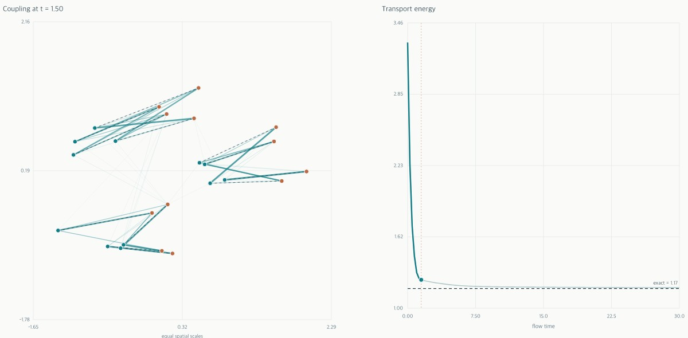
Matrix geometry & discrete transportOrthostochastic matrices and optimal transport
Uniform discrete transport parametrized by squared orthogonal matrices, with examples of suboptimal gradient-flow limits.
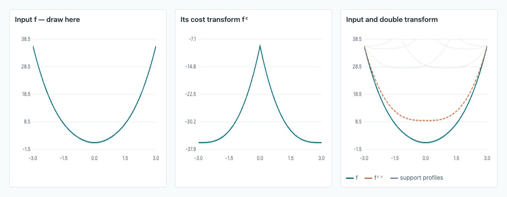
Duality & geometryc-transform as a generalized Legendre transform
Closure under averaging for cost-concave functions, with counterexamples for power costs and a positive result on the sphere.
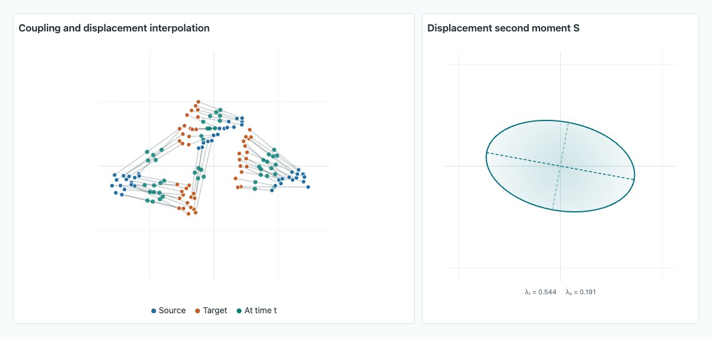
Spectral geometry & robust transportSpectral Wasserstein distances
Transport costs based on displacement second moments, with robust and dynamic formulations and examples using Schatten gauges.
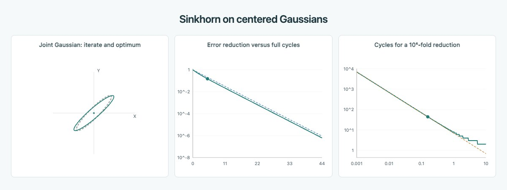
Entropic transport & convergenceSinkhorn on Gaussians: an exact convergence rate
An explicit covariance recursion and convergence rate for Gaussian Sinkhorn, including the dependence on entropic regularization.
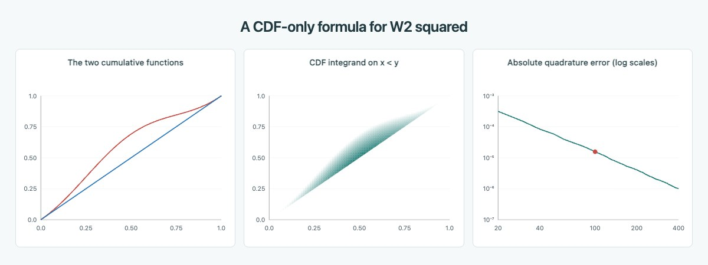
One-dimensional transportWasserstein distance without quantiles
A triangle-area identity expresses quadratic transport directly through cumulative distribution functions.
Flows and geometry
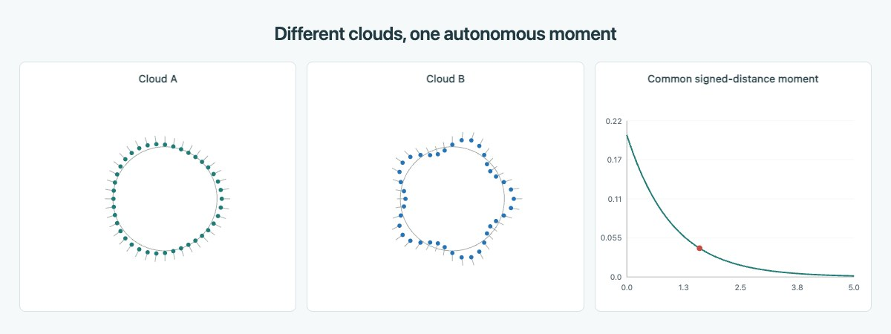
Moment closureWhich statistics evolve on their own?
A criterion for an observable to obey a closed scalar ODE along Wasserstein gradient flow.
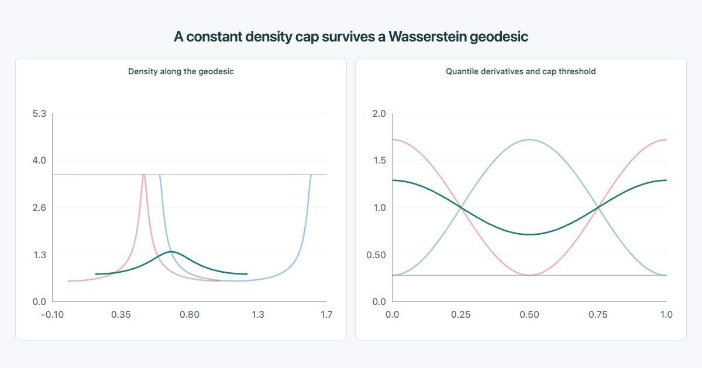
Displacement convexityWhy optimal transport respects a density cap
Preservation of density bounds along displacement interpolation and its implications for congestion constraints.
Probability and sampling
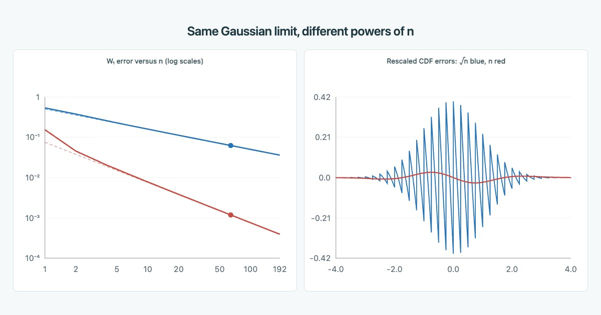
Central limit theoremTwo symmetric central limit theorems, two rates
Different Wasserstein central-limit rates for symmetric Bernoulli and uniform random variables.
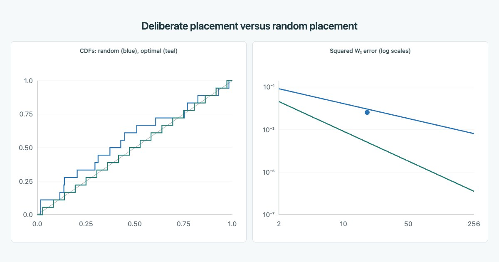
QuantizationCarefully placed particles versus random samples
Quantile-bin averages give the best equal-weight particles, with an exact comparison to random sampling on an interval.
Functions of measures
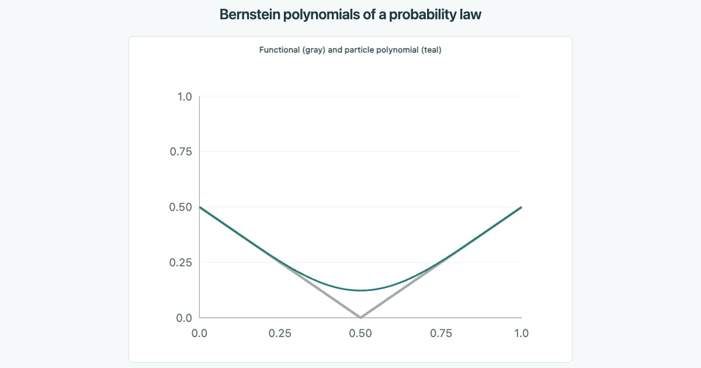
Constructive approximationBernstein polynomials on probability measures
Polynomial approximation of functionals on measures through empirical sampling, with uniform convergence and dimension-dependent rates.
Functions of measuresPolynomials of probability measures
Approximating continuous functions of probability measures with polynomials and pooled neural features.
Optimization and approximation
Doubly nonnegative and completely positive matrices
A five-cycle gives a matrix with nonnegative entries and eigenvalues but no nonnegative Gram factor. Gaussian scale mixtures give kernels with positive features.
Approximation & nonlinear operationsUniversal approximation from one nonlinearity
A version of Stone–Weierstrass using stability under a continuous non-affine operation instead of multiplication.
Neural networks & invarianceUniversality and invariance
Permutation invariance, the 1-WL equivalence relation, and approximation by convolutional graph neural networks.
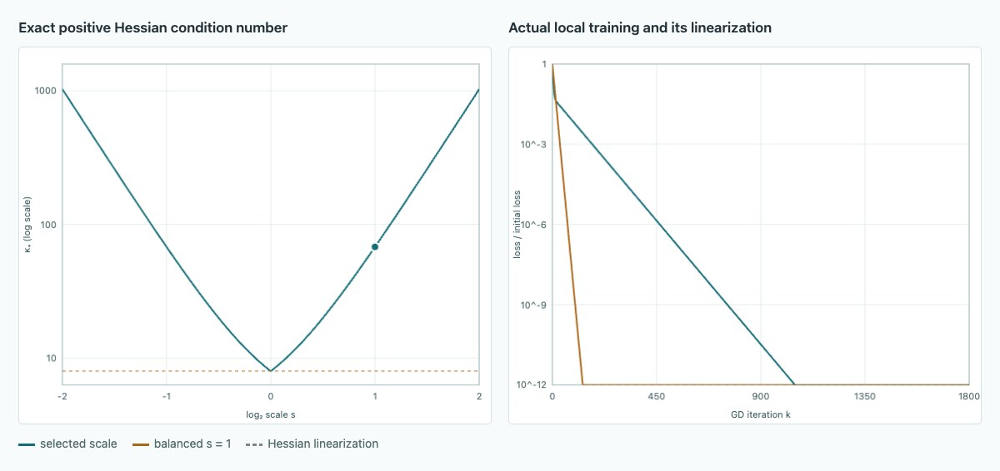
Low-rank optimizationOptimal conditioning of low-rank adaptation
How balancing and rescaling the factors affect Hessian conditioning for the same represented matrix.
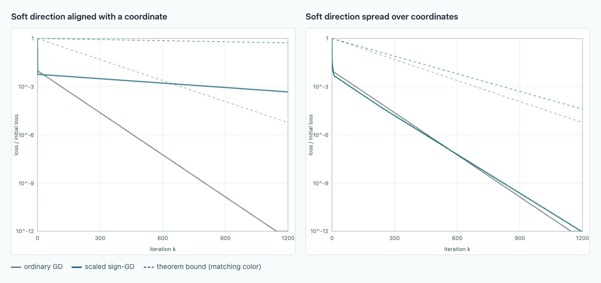
Norm-steepest descentConditioning of Non-Euclidean Gradient Descent
Two quadratics share their eigenvalues but not their coordinate geometry. Compare scaled sign descent with ordinary gradient descent.
Tensor geometryWhen the best low-rank tensor approximation does not exist
An example of rank-two tensors converging to a rank-three tensor, showing why a best low-rank approximation need not exist.
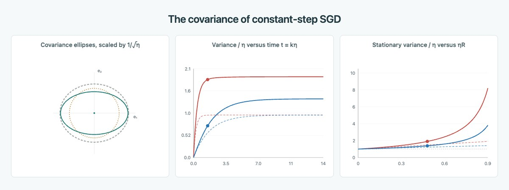
Stochastic optimizationThe covariance of SGD iterates
An exact least-squares recursion explains an isotropic noise floor, anisotropic relaxation, and the fourth-moment correction at finite step size.